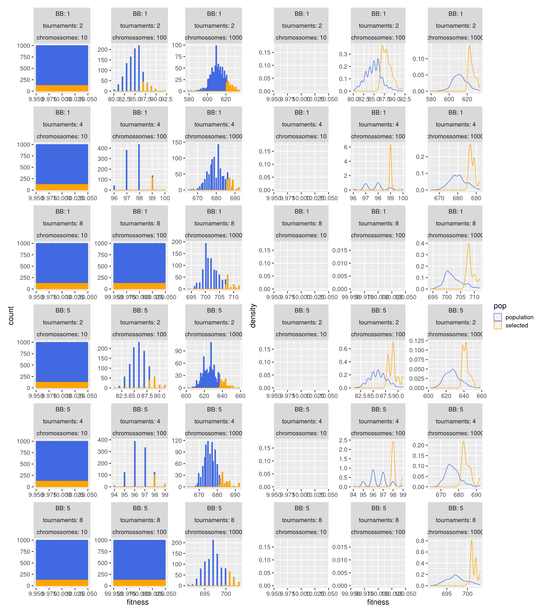
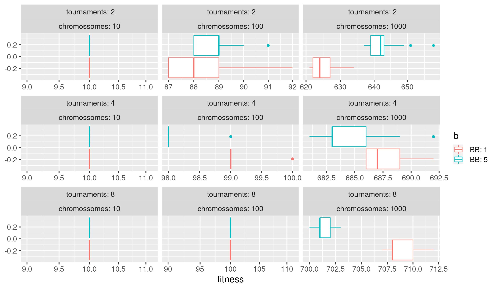

Sobre OneMax, fNTrap5 e BinInt
Em geral, quando se tem 10 cromossomos (ou bits) não houve problemas em convergir em 20 gerações. Até para os casos com 2 torneios apenas, as melhores soluções continham o ótimo global.
Para fNTrap5 a configuração BB = 5 junto com Torneio = 4 ou 2 o resultado empírico se mostrou melhor do que considerando BB = 1 ou Torneio = 8. A combinação BB=5 e Torneio = 8 teve um desempenho inferior aos demais.
Para BinInt e OneMax o BB = 1 foi melhor do que BB = 5.
Para 100 ou mais cromossomos, 8 torneios foram mais efetivos para encontrar boas soluções em 20 gerações. Principalmente para a função BinInt que tendia a ter soluções muito diversas.
BinInt teve problemas numéricos em virtude da larga escala e por isso dividi por 1e10. Além disso, soluções com o bit mais alto (por exemplo 2^100 no caso do tamanho 100 de cromossomos) tendiam a dominar e deixar os demais bits quase que aleatórios.
20 gerações mostraram insuficientes para cromossomos com 100 ou mais. Nenhum cenário alcançou o valor ótimo teórico.
set.seed(1234)
library(reticulate)
library(purrr)
library(ggplot2)
library(tidyverse)
library(glue)
theme_set(theme_gray(16))
import deap
import random
from deap import creator, base, tools, algorithms
import numpy as np
from matplotlib import pyplot
def evalOneMax(individual, k = None):
# return sum(individual), # ',' to compose tuple structure that is required by other operations
return sum(individual),0 # ',' to compose tuple structure that is required by other operations
def fTrap5(individual, k = 5):
u = sum(individual)
if u < k:
return k-1-u , 0
else:
return k , 0
def fNTrap5(individual,k=5): # the function works for k< 5 and k>5, be carefull in comprehend results of it
f = 0
#refactoring individual into building blocks (bbs) of size k, l//k bbs
#bbs = np.reshape(individual, (-1, k)) # -1 --> other dimension size is free, and calculated for consistency
#in the case l//k isn' integer, reshape() doesn't work
l = len(individual)
r = l//k # r BBs of size k
small_bb = l%k
for i in range(0,l-l//k,k):
#print(i)
bbk = individual[i:(i+k)]
x,__ = fTrap5(bbk, k)
f += x
if small_bb > 0:
bbk = individual[(i+k):(i+small_bb)]
x,__ = fTrap5(bbk, k)
f += x
return f,0
def evalBinInt(individual, k = None):
binInt = 0
for i in range(len(individual)):
binInt += individual[i]*(2**i)/1e10
return binInt,0
def ch_bits(mk,k,all):
mkt = mk[:]
if k < len(mk)-1:
ch_bits(mkt,k+1,all)
while mk[k] == 1:
mkt[k] = 0
if k < len(mk)-1:
m = ch_bits(mkt,k+1,all)
k += 1
all += [mkt]
return all
def gen_all_masks(i,j):
mk = []
for k in range(0,j-i+1):
mk += [1]
all = [mk]
ch_bits(mk,0,all)
return all
def find_best_mask(all_m, toolbox):
max = 0;
best_mask = []
for m in all_m:
f,__ = toolbox.evaluate(m)
if f > max:
max = f
best_mask = m
return best_mask;
def bb_exhaust(individual, toolbox, ip=0, jp=0, BEST_MASK = True):
child = toolbox.clone(individual)
if ip > jp:
ip, jp = jp, ip;
assert ip > -1, "\nlower bound of individual broken {} (loci) < {} (bound)".format(ip,0)
assert jp < len(individual), "\nupper bound of individual broken {} (loci) > {} (bound)".format(jp,len(individual)-1)
all_m = gen_all_masks(ip,jp)
if BEST_MASK == False:
i_m = random.randint(0, len(all_m) - 1)
child[ip:jp+1] = all_m[i_m]
else:
best_mask = find_best_mask(all_m, toolbox)
child[ip:jp+1] = best_mask
return child
def mutFlipBB(individual, indpb, toolbox, bb_indiv=[[]]):
offspring = toolbox.clone(individual)
NO_BB_TEMPLATE = False
if len(bb_indiv) != 0:
if len(bb_indiv[0]) == 0:
NO_BB_TEMPLATE = True
else:
NO_BB_TEMPLATE = True
bb_max_size = 10
if NO_BB_TEMPLATE == True:
ip = random.randint(0, len(offspring) - 1)
jp = random.randint(0, len(offspring) - 1)
if ip > jp:
ip, jp = jp, ip
offspring = bb_exhaust(offspring, toolbox, ip, jp)
return offspring,
else:
r = len(bb_indiv) # in case of ragged arrays - non-uniform BB sizes
jb = -1
for ip in range(0,r):
jp = len(bb_indiv[ip])-1 #supposedly BBs can possess different sizes
if random.random() <= indpb: #a chance to perform a BB-based mutation
#setup indixes (ib,jb) for the next BB of individual
ib = jb+1
jb = ib+jp
#find the best from offspring and save it as individual
offspring = bb_exhaust(offspring, toolbox, ib, jb )
#!!!!!!!!!!!!!!!!!!!!!!!!!!!!!!!!
#IN CASE THE bb_indiv is smaller then individual
#the remaining of individual could be treat as NO_BB_TEMPLATE=True, as above "else:"
#!!!!!!!!!!!!!!!!!!!!!!!!!!!!!!!!
return offspring,
population <- t(apply(rbind(diag(10), 0), 1, cumsum))
row.names(population) <- paste0("pop", 1:nrow(population))
population
[,1] [,2] [,3] [,4] [,5] [,6] [,7] [,8] [,9] [,10]
pop1 1 1 1 1 1 1 1 1 1 1
pop2 0 1 1 1 1 1 1 1 1 1
pop3 0 0 1 1 1 1 1 1 1 1
pop4 0 0 0 1 1 1 1 1 1 1
pop5 0 0 0 0 1 1 1 1 1 1
pop6 0 0 0 0 0 1 1 1 1 1
pop7 0 0 0 0 0 0 1 1 1 1
pop8 0 0 0 0 0 0 0 1 1 1
pop9 0 0 0 0 0 0 0 0 1 1
pop10 0 0 0 0 0 0 0 0 0 1
pop11 0 0 0 0 0 0 0 0 0 0
OneMax_R <- function(x) py$evalOneMax(x)[[1]]
fNTrap5_R <- function(x) py$fNTrap5(x, k = 5L)[[1]]
BinInt_R <- function(x) py$evalBinInt(x)[[1]]
bits <- rowSums(population)
onemax <- apply(population, 1, OneMax_R)
fntrap5 <- apply(population, 1, fNTrap5_R)
binint <- apply(population, 1, BinInt_R)
data.frame(
bits = c(bits, bits, bits),
fitness = c(onemax, fntrap5, binint),
func = rep(c("onemax", "fntrap5", "binint"), each = length(bits))
) %>%
ggplot(aes(x = bits, y = fitness, colour = func)) +
geom_line() +
geom_point() +
scale_fill_manual(values = c("onemax" = "royalblue", "fntrap5" = "orange", "binint" = "salmon")) +
facet_wrap(~func, scales = "free_y", ncol = 3)
# creators
creator.create("FitnessMax", base.Fitness, weights=(1,))
creator.create("Individual", list, fitness = creator.FitnessMax)
creator.create("Population", list)
def prepare_toolbox(fitness, n_chromossomes, n_torneios, n_bb):
# toolbox
toolbox = base.Toolbox()
toolbox.register("attr_bool", random.randint, 0, 1)
toolbox.register("individual", tools.initRepeat, creator.Individual, toolbox.attr_bool, n = n_chromossomes)
toolbox.register("population", tools.initRepeat, creator.Population, toolbox.individual)
# genetic operators
toolbox.register("evaluate", fitness)
toolbox.register("mate", tools.cxTwoPoint)
if n_bb == 5:
toolbox.register("mutate", mutFlipBB, indpb = 0.05, bb_indiv=[[1,0,1,0,1]], toolbox = toolbox)
else:
toolbox.register("mutate", tools.mutFlipBit, indpb = 0.05)
toolbox.register("select", tools.selTournament, tournsize = n_torneios)
return toolbox
# main function - run genetic algorithm
def runGA(fitness, n_chromossomes, n_torneios, npop = 1000, ngen = 10, cxpb = 0.7, mutpb = 0.1, n_bb = 1):
# toolbox for ONEMAX
toolbox_onemax = prepare_toolbox(fitness = fitness, n_chromossomes = n_chromossomes, n_torneios = n_torneios, n_bb = n_bb)
# population
pop = toolbox_onemax.population(npop)
# evolution loop
for g in range(ngen):
offspring = algorithms.varAnd(pop, toolbox_onemax, cxpb=cxpb, mutpb=mutpb)
fits = toolbox_onemax.map(toolbox_onemax.evaluate, offspring)
for fit, ind in zip(fits, offspring):
ind.fitness.values = fit
pop = toolbox_onemax.select(offspring, k=len(pop))
popselected = tools.selBest(pop, len(pop)//8)
return {"population": pop, "populationSelected": popselected}
# setup
NGEN = 20
CXPB = 0.7
MUTPB = 0.1
NPOP = 1000
BB = [1, 5]
NCHROMOSSOMES = [10,100,1000]
NTOURNAMENTS = [2,4,8]
# parameters loop
pops = {}
popsels = {}
r = {}
for b in range(len(BB)):
for n in range(len(NCHROMOSSOMES)):
for t in range(len(NTOURNAMENTS)):
r = runGA(evalOneMax, NCHROMOSSOMES[n], NTOURNAMENTS[t], NPOP, NGEN, CXPB, MUTPB, BB[b])
pops["chromossomes: {}; tournaments: {}; BB: {}".format(NCHROMOSSOMES[n], NTOURNAMENTS[t], BB[b])] = r["population"]
popsels["chromossomes: {}; tournaments: {}; BB: {}".format(NCHROMOSSOMES[n], NTOURNAMENTS[t], BB[b])] = r["populationSelected"]
parse_runGA_to_dataframe <- function(py_obj, fitness_f, pop = "unkown") {
tibble(
n_t = names(py_obj),
individual = py_obj,
pop = pop
) %>%
mutate(
individual = map(individual, ~{.x %>% map(~.x$copy())})
) %>%
unnest(individual) %>%
mutate(fitness = map_dbl(individual, fitness_f)) %>%
separate(n_t, c("n", "t", "b"), sep = ";")
}
population <- parse_runGA_to_dataframe(py$pops, OneMax_R, "population")
population_selected <- parse_runGA_to_dataframe(py$popsels, OneMax_R, "selected")
population <- bind_rows(population, population_selected)
title <- glue("NGEN: {py$NGEN}; CXPB = {py$CXPB}; MUTPB: {py$MUTPB}; NPOP: {py$NPOP}")Parameters: NGEN: 20; CXPB = 0.7; MUTPB: 0.1; NPOP: 1000

Comparação dos selecionados para BB = 1 vs BB = 5
population_selected %>%
ggplot(aes(x = fitness)) +
geom_boxplot(aes(colour = b)) +
facet_wrap(~ t + n, scales = "free_x") +
scale_x_log10()
(same code, just switching from OneMax to fNTrap5 fitness…)
# parameters loop
for b in range(len(BB)):
for n in range(len(NCHROMOSSOMES)):
for t in range(len(NTOURNAMENTS)):
r = runGA(fNTrap5, NCHROMOSSOMES[n], NTOURNAMENTS[t], NPOP, NGEN, CXPB, MUTPB, BB[b])
pops["chromossomes: {}; tournaments: {}; BB: {}".format(NCHROMOSSOMES[n], NTOURNAMENTS[t], BB[b])] = r["population"]
popsels["chromossomes: {}; tournaments: {}; BB: {}".format(NCHROMOSSOMES[n], NTOURNAMENTS[t], BB[b])] = r["populationSelected"]Top5 Solutions for chromossomes: 100; tournaments: 8; BB: 1
population_selected %>%
dplyr::filter(n == "chromossomes: 100", t == " tournaments: 8", b == " BB: 1") %>%
head(5) %>%
pull(individual) %>%
do.call(rbind, .) %>%
`rownames<-`(paste0("pop", 1:5))
[,1] [,2] [,3] [,4] [,5] [,6] [,7] [,8] [,9] [,10] [,11] [,12]
pop1 1 1 1 1 1 1 1 1 1 1 1 1
pop2 1 1 1 1 1 1 1 1 1 1 1 1
pop3 1 1 1 1 1 1 1 1 1 1 1 1
pop4 1 1 1 1 1 1 1 1 1 1 1 1
pop5 1 1 1 1 1 1 1 1 1 1 1 1
[,13] [,14] [,15] [,16] [,17] [,18] [,19] [,20] [,21] [,22]
pop1 1 1 1 1 1 1 1 1 1 1
pop2 1 1 1 1 1 1 1 1 1 1
pop3 1 1 1 1 1 1 1 1 1 1
pop4 1 1 1 1 1 1 1 1 1 1
pop5 1 1 1 1 1 1 1 1 1 1
[,23] [,24] [,25] [,26] [,27] [,28] [,29] [,30] [,31] [,32]
pop1 1 1 1 1 1 1 1 1 1 1
pop2 1 1 1 1 1 1 1 1 1 1
pop3 1 1 1 1 1 1 1 1 1 1
pop4 1 1 1 1 1 1 1 1 1 1
pop5 1 1 1 1 1 1 1 1 1 1
[,33] [,34] [,35] [,36] [,37] [,38] [,39] [,40] [,41] [,42]
pop1 1 1 1 1 1 1 1 1 1 1
pop2 1 1 1 1 1 1 1 1 1 1
pop3 1 1 1 1 1 1 1 1 1 1
pop4 1 1 1 1 1 1 1 1 1 1
pop5 1 1 1 1 1 1 1 1 1 1
[,43] [,44] [,45] [,46] [,47] [,48] [,49] [,50] [,51] [,52]
pop1 1 1 1 1 1 1 1 1 1 1
pop2 1 1 1 1 1 1 1 1 1 1
pop3 1 1 1 1 1 1 1 1 1 1
pop4 1 1 1 1 1 1 1 1 1 1
pop5 1 1 1 1 1 1 1 1 1 1
[,53] [,54] [,55] [,56] [,57] [,58] [,59] [,60] [,61] [,62]
pop1 1 1 1 1 1 1 1 1 1 1
pop2 1 1 1 1 1 1 1 1 1 1
pop3 1 1 1 1 1 1 1 1 1 1
pop4 1 1 1 1 1 1 1 1 1 1
pop5 1 1 1 1 1 1 1 1 1 1
[,63] [,64] [,65] [,66] [,67] [,68] [,69] [,70] [,71] [,72]
pop1 1 1 1 1 1 1 1 1 1 1
pop2 1 1 1 1 1 1 1 1 1 1
pop3 1 1 1 1 1 1 1 1 1 1
pop4 1 1 1 1 1 1 1 1 1 1
pop5 1 1 1 1 1 1 1 1 1 1
[,73] [,74] [,75] [,76] [,77] [,78] [,79] [,80] [,81] [,82]
pop1 1 1 1 1 1 1 1 1 1 1
pop2 1 1 1 1 1 1 1 1 1 1
pop3 1 1 1 1 1 1 1 1 1 1
pop4 1 1 1 1 1 1 1 1 1 1
pop5 1 1 1 1 1 1 1 1 1 1
[,83] [,84] [,85] [,86] [,87] [,88] [,89] [,90] [,91] [,92]
pop1 1 1 1 1 1 1 1 1 1 1
pop2 1 1 1 1 1 1 1 1 1 1
pop3 1 1 1 1 1 1 1 1 1 1
pop4 1 1 1 1 1 1 1 1 1 1
pop5 1 1 1 1 1 1 1 1 1 1
[,93] [,94] [,95] [,96] [,97] [,98] [,99] [,100]
pop1 1 1 1 1 1 1 1 1
pop2 1 1 1 1 1 1 1 1
pop3 1 1 1 1 1 1 1 1
pop4 1 1 1 1 1 1 1 1
pop5 1 1 1 1 1 1 1 1Parameters: NGEN: 20; CXPB = 0.7; MUTPB: 0.1; NPOP: 1000
Comparação dos selecionados para BB = 1 vs BB = 5
population_selected %>%
ggplot(aes(x = fitness)) +
geom_boxplot(aes(colour = b)) +
facet_wrap(~ t + n, scales = "free_x") +
scale_x_log10()(same code, just switching from OneMax to BinInt fitness…)
for b in range(len(BB)):
for n in range(len(NCHROMOSSOMES)):
for t in range(len(NTOURNAMENTS)):
r = runGA(evalBinInt, NCHROMOSSOMES[n], NTOURNAMENTS[t], NPOP, NGEN, CXPB, MUTPB, BB[b])
pops["chromossomes: {}; tournaments: {}; BB: {}".format(NCHROMOSSOMES[n], NTOURNAMENTS[t], BB[b])] = r["population"]
popsels["chromossomes: {}; tournaments: {}; BB: {}".format(NCHROMOSSOMES[n], NTOURNAMENTS[t], BB[b])] = r["populationSelected"]Top5 Solutions for chromossomes: 100; tournaments: 8; BB: 1
population_selected %>%
dplyr::filter(n == "chromossomes: 100", t == " tournaments: 8", b == " BB: 1") %>%
head(5) %>%
pull(individual) %>%
do.call(rbind, .) %>%
`rownames<-`(paste0("pop", 1:5))
[,1] [,2] [,3] [,4] [,5] [,6] [,7] [,8] [,9] [,10] [,11] [,12]
pop1 1 1 1 1 1 1 1 1 1 1 0 0
pop2 1 1 1 1 1 1 1 1 1 1 0 0
pop3 1 1 1 1 1 1 1 1 1 1 0 0
pop4 1 1 1 1 1 1 1 1 1 1 0 0
pop5 1 1 1 1 1 1 1 1 1 1 0 0
[,13] [,14] [,15] [,16] [,17] [,18] [,19] [,20] [,21] [,22]
pop1 0 0 0 1 1 1 1 1 1 1
pop2 0 0 0 1 1 1 1 1 1 1
pop3 0 0 0 1 1 1 1 1 1 1
pop4 0 0 0 1 1 1 1 1 1 1
pop5 0 0 0 1 1 1 1 1 1 1
[,23] [,24] [,25] [,26] [,27] [,28] [,29] [,30] [,31] [,32]
pop1 1 1 1 0 0 0 0 0 1 1
pop2 1 1 1 0 0 0 0 0 1 1
pop3 1 1 1 0 0 0 0 0 1 1
pop4 1 1 1 0 0 0 0 0 1 1
pop5 1 1 1 0 0 0 0 0 1 1
[,33] [,34] [,35] [,36] [,37] [,38] [,39] [,40] [,41] [,42]
pop1 1 1 1 1 1 1 1 1 1 1
pop2 1 1 1 1 1 1 1 1 1 1
pop3 1 1 1 1 1 1 1 1 1 1
pop4 1 1 1 1 1 1 1 1 1 1
pop5 1 1 1 1 1 1 1 1 1 1
[,43] [,44] [,45] [,46] [,47] [,48] [,49] [,50] [,51] [,52]
pop1 1 1 1 1 1 1 1 1 1 1
pop2 1 1 1 1 1 1 1 1 1 1
pop3 1 1 1 1 1 1 1 1 1 1
pop4 1 1 1 1 1 1 1 1 1 1
pop5 1 1 1 1 1 1 1 1 1 1
[,53] [,54] [,55] [,56] [,57] [,58] [,59] [,60] [,61] [,62]
pop1 1 1 1 1 1 1 1 1 1 1
pop2 1 1 1 1 1 1 1 1 1 1
pop3 1 1 1 1 1 1 1 1 1 1
pop4 1 1 1 1 1 1 1 1 1 1
pop5 1 1 1 1 1 1 1 1 1 1
[,63] [,64] [,65] [,66] [,67] [,68] [,69] [,70] [,71] [,72]
pop1 1 1 1 1 1 1 1 1 1 1
pop2 1 1 1 1 1 1 1 1 1 1
pop3 1 1 1 1 1 1 1 1 1 1
pop4 1 1 1 1 1 1 1 1 1 1
pop5 1 1 1 1 1 1 1 1 1 1
[,73] [,74] [,75] [,76] [,77] [,78] [,79] [,80] [,81] [,82]
pop1 1 1 1 1 1 1 1 1 1 1
pop2 1 1 1 1 1 1 1 1 1 1
pop3 1 1 1 1 1 1 1 1 1 1
pop4 1 1 1 1 1 1 1 1 1 1
pop5 1 1 1 1 1 1 1 1 1 1
[,83] [,84] [,85] [,86] [,87] [,88] [,89] [,90] [,91] [,92]
pop1 1 1 0 1 0 0 0 0 1 0
pop2 1 1 0 1 0 0 0 0 1 0
pop3 1 1 0 1 0 0 0 0 1 0
pop4 0 0 0 1 1 0 1 0 1 0
pop5 1 1 0 1 0 0 0 0 1 0
[,93] [,94] [,95] [,96] [,97] [,98] [,99] [,100]
pop1 0 0 0 1 1 1 1 1
pop2 0 0 0 1 1 1 1 1
pop3 0 0 0 1 1 1 1 1
pop4 0 0 0 1 1 1 1 1
pop5 0 0 0 1 1 1 1 1Parameters: NGEN: 20; CXPB = 0.7; MUTPB: 0.1; NPOP: 1000
Comparação dos selecionados para BB = 1 vs BB = 5
population_selected %>%
ggplot(aes(x = fitness)) +
geom_boxplot(aes(colour = b)) +
facet_wrap(~ t + n, scales = "free_x") +
scale_x_log10()